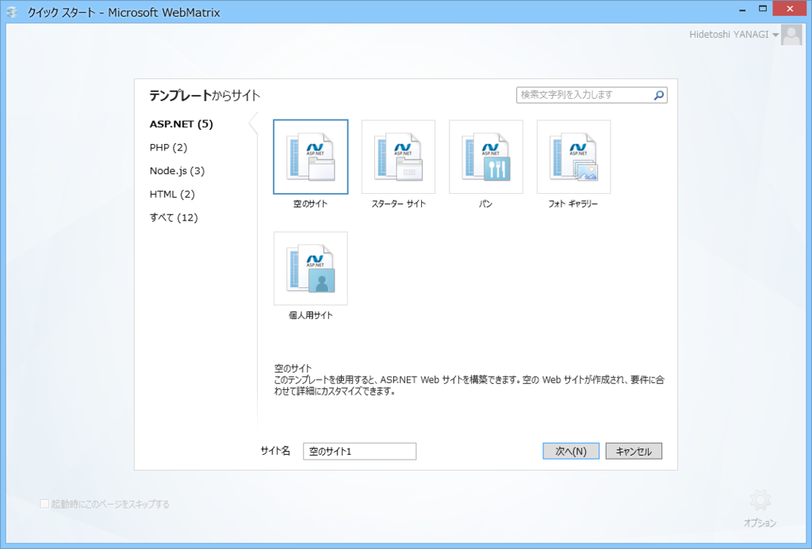
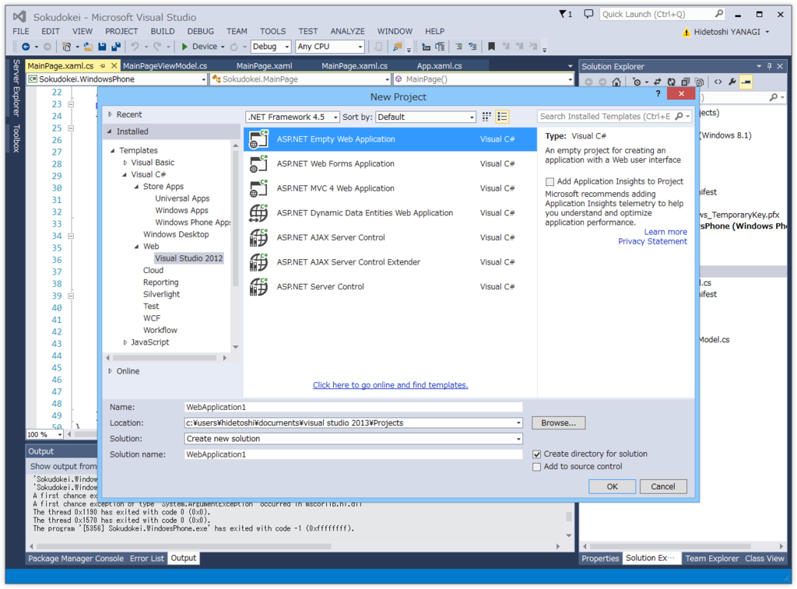
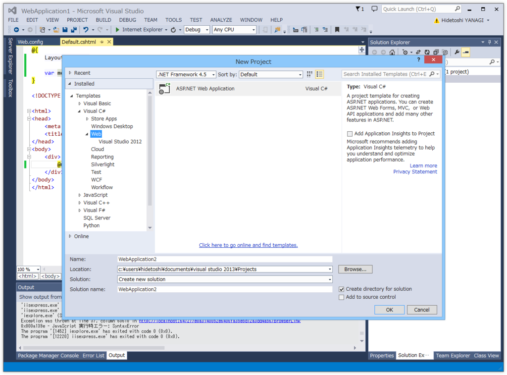
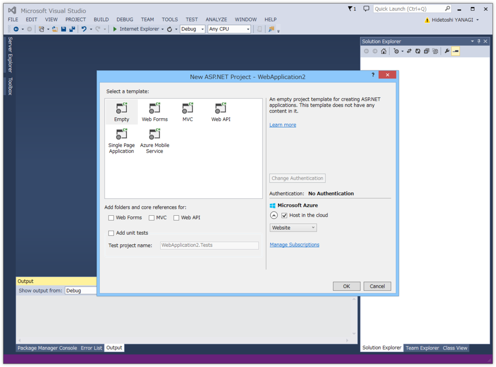
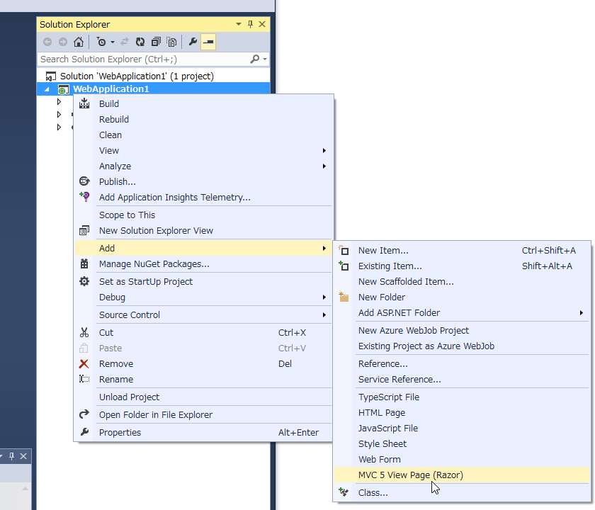
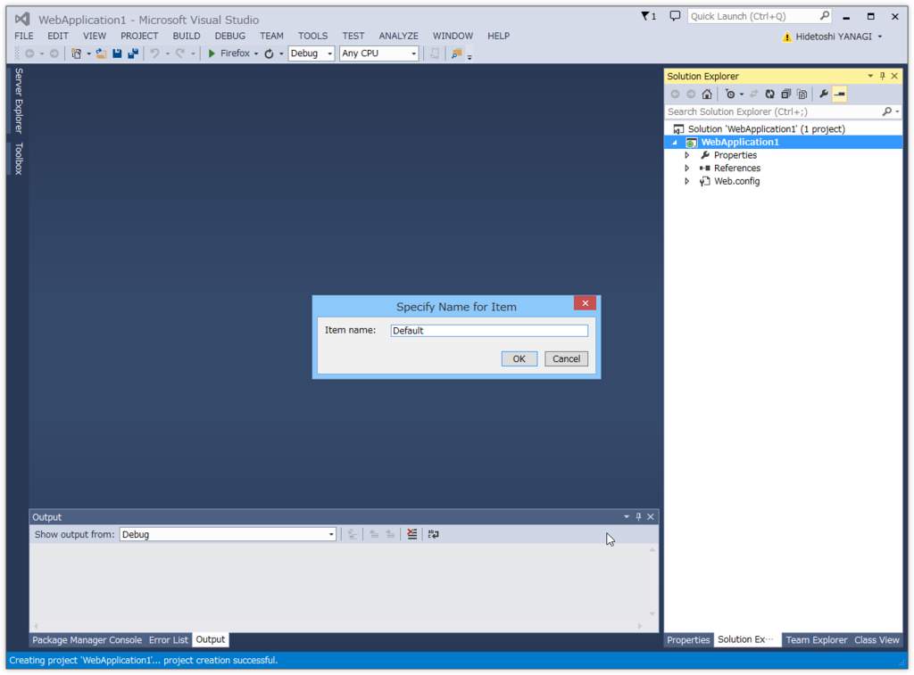
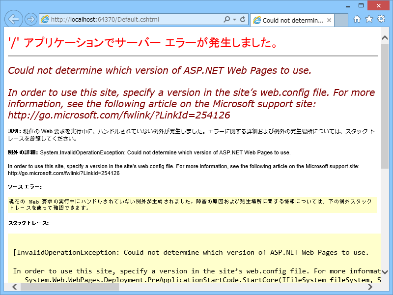
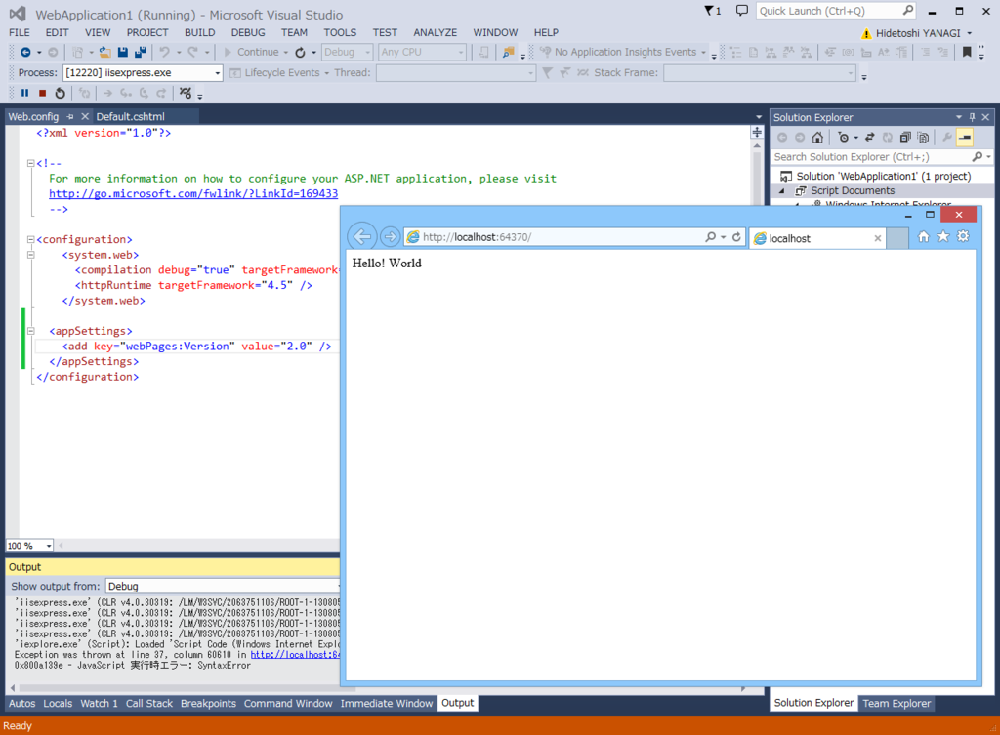

「Visual Studio Community」で ASP.NET Web Pages をはじめる
公開日：

みんなも大好きな「WebMatrix」ですが、そろそろ本格的に“なかったこと”になっているような気がしてならない今日この頃。代わりとなるのはおそらく「Visual Studio Code」なのでしょうが、まだちょっとベータ版なので、今回は定評のありまくる「Visual Studio Community」で ASP.NET Web Pages をはじめる方法を調べてみました。「WebMatrix」で“空のサイト”に相当するものを作るのが今回の目標です。
とりあえずプロジェクトを作成する

まずはプロジェクトを作成する必要があります。プロジェクトの新規作成ダイアログで［Templates］－［Visual C#］－［Web］－［Visual Studio 2012］とツリーを辿り、「ASP.NET Empty Web Application」を選択します。Visual Basic じゃないと死んでしまう病に冒されている人は、［Visual C#］の代わりに［Visual Basic］を選択するとよいでしょう。

ちなみに、［Templates］－［Visual C#］－［Web］にある「ASP.NET Web Application」テンプレートを使っても構いません。

このテンプレートを選択すると、プロジェクトの種類なんかを選べるダイアログが現れるので、ここで「Empty」を選択すればさっきと同じ結果になると思います（厳密にくらべたわけじゃないから知らんけど）。このダイアログからプロジェクトを作ると Azure Web Sites も同時に作れるので、必要な場合はこっちを選ぶと手間が省けるかも。
ページの追加

プロジェクトを作成したら、ページの追加。コンテストメニューを開いて［Add］－［MVC 5 View Page (Razor)］を選択します。

あとは名前を付けると、cshtml ファイルが生成されます。ASP.NET（Web Pages）の流儀にしたがって、最初のファイルの名前は Default.cshtml にしておきましょうか。中身はこんな感じです。
@{
Layout = null;
}
<!DOCTYPE html>
<html>
<head>
<meta name="viewport" content="width=device-width" />
<title></title>
</head>
<body>
<div>
</div>
</body>
</html>
body が空っぽなので、ついでにこんな感じでサンプルコードを加えておきます。
@{
Layout = null;
var message = "Hello! World"; // 追加
}
<!DOCTYPE html>
<html>
<head>
<meta name="viewport" content="width=device-width" />
<title></title>
</head>
<body>
<div>
@message <!-- 追加 -->
</div>
</body>
</html>
これで［F5］キーを押せば、"Hello! World" と書かれたサイトが立ち上がるはず――

――だったのですが、ダメでした。http://go.microsoft.com/fwlink/?LinkId=254126 を読めと言われるのでそれに目を通してみますと、Web.config で利用する ASP.NET Web Pages のバージョンを指定しろと書いてあります。仕方ないので、言われたとおりにキーを追加。
<?xml version="1.0" encoding="utf-8"?> <!-- For more information on how to configure your ASP.NET application, please visit http://go.microsoft.com/fwlink/?LinkId=169433 --> <configuration> <system.web> <compilation debug="true" targetFramework="4.5" /> <httpRuntime targetFramework="4.5" /> </system.web> <appSettings> <!-- このセクションを追加 --> <add key="webPages:Version" value="2.0" /> </appSettings> </configuration>

すると、サイトが立ち上がりました！ めでたしめでたし！ あとは SQL CE データベースを読み書きできるようにしたり、その中身を見るためのよさげなツールを探したり（クッソめんどくせー！）、追加の NuGet パッケージを入れたりするだけですね。これで WebMatrix を窓からポイできます。スターターサイトなんかは、Yeoman かなにかで準備する感じになるのかなぁ……ちょっとずつ新しい流儀に慣れていかないとね。
おまけ
ASP.NET Web Pages は .NET 言語で PHP っぽく Web ページのロジックを記述できるフレームワークです。PHP よりも安全に作られているので、お仕事で使わなければならないかわいそうな人でもなければ、こっちの方がお勧めデス。
書き方は @shibayan のサイトでも参考にしてください。PHP の記法と比べながら簡単に解説してくれています。
「（1）」って書いてあるのに続編がないのは気にしないでおきましょう。あとは
なんかが詳しいかもしれません。